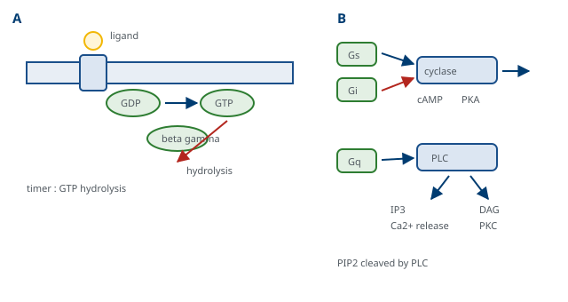
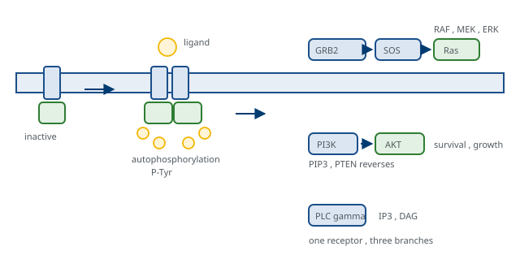

M01-W11-L02 · 인체일반생물학과 기초세포생물학
세포 신호전달: 수용체와 2차 전령
Cell Signaling: Receptors and Second Messengers
학습목표
- 신호 전달의 네 단계를 쓰고 신호 분자를 작용 거리로 분류한다.
- 지용성 신호와 수용성 신호의 수용체 위치가 다른 이유를 설명하고 각각의 반응 속도를 비교한다.
- 수용체를 세 계열로 나누고 각 계열의 신호 전달 방식과 대표 리간드를 연결한다.
- G protein의 작동 주기를 GTP 가수분해와 함께 서술하고 Gs·Gi·Gq의 하류 경로를 구분한다.
- cAMP와 Ca²⁺·IP₃ 경로를 각각 단계로 쓰고 2차 전령이 하는 일을 증폭의 관점에서 설명한다.
- 수용체 tyrosine kinase의 활성화와 adaptor 단백질에 의한 신호 분기를 설명한다.
- Ras-MAPK 경로와 PI3K-AKT 경로의 단계를 쓰고 두 경로의 생물학적 결과를 구분한다.
- 신호가 꺼지는 네 가지 방식을 들고 각 방식이 실패했을 때의 결과를 예측한다.
- 신호 전달 단백질이 약물과 질환에서 표적이 되는 방식을 경로별로 설명한다.
- 수용체 신호의 특이성과 가변성이 어디에서 오는지를 세포 내 구성으로 설명한다.
선수지식
- M01-W10-L03 원형질막과 막수송 — 막단백질의 구조, 이온 통로의 개폐, 막전위
- M01-W08-L01 번역 후 가공, 단백질 접힘과 분해 — 인산화에 의한 조절, 가역적 수식, ubiquitin 표지
- M01-W07-L02 전사 조절과 후성유전 — 신호가 전사인자에 도달하는 네 경로, 핵수용체
- M01-W09-L02 생체에너지: 자유에너지와 ATP — GTP 가수분해가 방향성을 만드는 방식
1. 신호 전달이 풀어야 하는 문제
다세포 생물의 세포는 혼자 결정하지 않는다. 언제 분열하고 언제 죽고 무엇으로 분화할지를 주변과 전신의 신호에 맞추어 정한다. 신호 전달은 세포 밖의 사건을 세포 안의 반응으로 바꾸는 장치이고, 그 과정은 네 단계로 분해된다.
- 수신: 신호 분자가 수용체에 결합한다.
- 변환: 결합이 수용체의 구조나 활성을 바꾼다.
- 전달과 증폭: 세포 안의 분자들이 차례로 변화를 전달하며 신호를 키운다.
- 반응: 효소 활성, 세포골격, 유전자 발현이 바뀐다.
이 장치가 풀어야 하는 요구는 서로 충돌한다. 민감해야 하지만 잡음에 반응해서는 안 되고, 빨라야 하지만 끌 수 있어야 하며, 특이해야 하지만 하나의 신호로 여러 반응을 내야 한다. 이 수업에서 다루는 구조의 대부분은 이 충돌을 해결하는 방식으로 읽을 수 있다.
신호 분자는 작용 거리로 분류한다.
| 분류 | 작용 거리 | 예 |
|---|---|---|
| 내분비(endocrine) | 혈액을 타고 전신 | insulin, 갑상샘호르몬, cortisol |
| 측분비(paracrine) | 이웃 세포 | 성장인자, 대부분의 사이토카인 |
| 자가분비(autocrine) | 자기 자신 | 일부 성장인자. 종양에서 흔하다 |
| 접촉 의존 | 막에 붙은 채 | Notch-Delta, 면역세포의 상호작용 |
| 신경 전달 | 시냅스 틈 | acetylcholine, glutamate |
같은 분자가 거리에 따라 다른 이름으로 불리는 경우가 많으므로, 분류는 분자의 성질이 아니라 쓰이는 방식을 가리킨다. 자가분비가 특별히 언급되는 이유는 종양에서 세포가 자기 성장인자를 만들어 자기 수용체를 자극하는 되먹임 고리를 만들기 때문이다.
리간드의 화학적 성질이 수용체의 위치를 정한다. 지용성 신호(스테로이드, 갑상샘호르몬, retinoic acid, vitamin D)는 막을 통과해 세포 안의 수용체에 결합하고, 그 수용체가 곧 전사인자다. 따라서 반응이 전사와 번역을 거쳐야 하므로 시간 단위로 느리고 오래 지속된다. 수용성 신호는 막을 통과하지 못해 막의 수용체에 결합하고, 세포 안의 연쇄를 거쳐 반응을 만든다. 반응이 초에서 분 단위로 빠르고 끌 수 있다. 예외도 알아 둔다. 산화질소는 기체이면서 막을 통과해 세포 안의 효소(guanylyl cyclase)를 직접 활성화한다.
신호 분자의 화학적 종류도 넓다. 펩타이드와 단백질(insulin, 성장인자, 사이토카인), 아미노산 유도체(adrenaline, 갑상샘호르몬, 신경전달물질), 스테로이드, 지질 유도체(eicosanoid), 뉴클레오타이드(ATP, adenosine), 그리고 기체(NO, CO)가 모두 신호로 쓰인다. 이 목록에서 읽을 점은 분자의 종류가 아니라 수용체가 있다는 사실이 그 분자를 신호로 만든다는 것이다. ATP는 세포 안에서 에너지 통화로 쓰이지만 세포 밖으로 나오면 수용체에 결합해 신호가 되고, 그래서 손상된 세포가 내놓은 ATP가 염증의 신호로 작동한다. 같은 분자가 위치에 따라 전혀 다른 의미를 가지는 예이며, M01-W10-L01에서 본 cytochrome c와 mtDNA의 경우와 같은 논리다.
2. 수용체의 세 계열
막의 수용체는 변환 방식으로 세 계열로 나눈다. 이 분류가 신호 전달을 정리하는 가장 효율적인 틀이다.
| 계열 | 변환 방식 | 대표 리간드 | 반응 속도 |
|---|---|---|---|
| 이온 통로 연결 수용체 | 리간드가 통로를 열어 이온이 흐른다 | acetylcholine(니코틴성), GABA, glutamate | 밀리초 |
| G protein 연결 수용체(GPCR) | G protein을 거쳐 효소나 통로를 조절한다 | adrenaline, 대부분의 호르몬, 냄새, 빛 | 초 |
| 효소 연결 수용체 | 수용체 자체가 효소이거나 효소를 모은다 | insulin, 성장인자, 사이토카인 | 분~시간 |
세 계열의 반응 속도가 세 자리 수 이상 다르다는 점이 중요하다. 단계가 적으면 빠르고, 많으면 느리지만 증폭과 조절의 여지가 커진다. 시냅스 전달에 통로형이 쓰이고 성장과 분화에 효소형이 쓰이는 분업이 이 관계에서 나온다.
세 계열 밖에 핵수용체가 있고, 앞 절에서 본 지용성 신호를 받는다. 상세는 M01-W07-L02에서 다루었다.
GPCR의 규모를 짚어 둔다. 사람 유전체에 약 800종의 GPCR이 있어 가장 큰 수용체 가족을 이루고, 그 가운데 절반 가까이가 냄새 수용체다. 구조는 모두 일곱 번 막을 통과하는 단일 사슬이다. 승인된 약물의 약 3분의 1이 GPCR을 표적으로 한다는 점에서 임상적 비중이 가장 크다.
3. G protein의 작동 주기
이종삼량체 G protein은 α, β, γ 세 소단위로 되어 있고, α가 GTP 또는 GDP를 붙잡는다. 작동 주기는 다음과 같다.
- 대기: 리간드가 없으면 α는 GDP를 붙잡고 βγ와 결합한 삼량체 상태로 막에 붙어 있다.
- 활성화: 리간드가 결합한 수용체가 삼량체와 접촉해 α의 GDP를 GTP로 교환시킨다. 수용체가 교환인자(GEF)로 작동하는 것이다.
- 분리: GTP를 붙잡은 α가 βγ에서 떨어진다. α와 βγ가 모두 하류 표적을 조절한다.
- 종결: α의 내재적 GTPase 활성이 GTP를 가수분해하면 다시 GDP 상태가 되어 βγ와 재결합하고 대기 상태로 돌아간다. RGS 단백질이 이 가수분해를 가속한다.
이 주기에서 두 가지를 읽어야 한다. 첫째, GTP 가수분해가 타이머다. 신호의 지속 시간은 리간드가 얼마나 오래 붙어 있는지가 아니라 α가 GTP를 얼마나 오래 쥐고 있는지로 정해진다. 둘째, 하나의 수용체가 여러 G protein을 차례로 활성화할 수 있어 첫 증폭이 여기서 일어난다.
Gα의 종류가 하류 경로를 정한다.
| Gα | 하류 효소 | 2차 전령 | 결과의 예 |
|---|---|---|---|
| Gs | adenylyl cyclase 활성화 | cAMP 증가 | β 아드레날린 수용체, 심박수 증가 |
| Gi | adenylyl cyclase 억제 | cAMP 감소 | M2 무스카린 수용체, 심박수 감소 |
| Gq | phospholipase C 활성화 | IP₃와 DAG, Ca²⁺ 증가 | α1 아드레날린 수용체, 혈관 수축 |
| G12/13 | Rho 경로 활성화 | — | 세포골격의 재편 |
같은 리간드가 어느 수용체 아형에 붙는지에 따라 결과가 반대가 된다는 점이 임상에서 결정적이다. Adrenaline은 β1(Gs)에 붙으면 심장을 자극하고, α1(Gq)에 붙으면 혈관을 수축시키며, β2(Gs)에 붙으면 기관지를 확장한다. 리간드가 아니라 수용체와 그 수용체가 쓰는 G protein이 반응을 정한다. 그래서 약물은 리간드를 흉내는 것보다 아형에 선택적으로 작용하도록 설계된다.

4. cAMP 경로
cAMP(cyclic AMP)는 가장 먼저 밝혀진 2차 전령이다. Adenylyl cyclase가 ATP에서 만들고, phosphodiesterase가 AMP로 분해한다. 따라서 세포 내 cAMP 농도는 생산과 분해의 균형으로 정해지며, 두 효소 모두 조절 대상이다.
경로의 단계는 다음과 같다.
- 리간드가 Gs 연결 수용체에 결합한다.
- Gsα-GTP가 adenylyl cyclase를 활성화한다.
- cAMP가 수 초 안에 수십 배로 증가한다.
- cAMP가 protein kinase A(PKA)의 조절 소단위에 결합한다. PKA는 조절 소단위 둘과 촉매 소단위 둘로 된 사량체인데, cAMP가 네 분자 결합하면 촉매 소단위가 풀려나 활성화된다.
- 활성 PKA가 표적 단백질의 serine과 threonine을 인산화한다. 표적은 세포질의 효소와 핵의 전사인자(CREB) 양쪽에 있다.
증폭의 크기를 세어 보면 이 설계의 의미가 보인다. 리간드 한 분자가 수용체 하나를 활성화하고, 그 수용체가 여러 G protein을, 각 G protein이 활성화한 cyclase가 수백에서 수천 개의 cAMP를, 각 PKA가 다시 수많은 표적을 인산화한다. 단계마다 곱해지므로 리간드 수십 분자가 세포의 대사 상태를 바꿀 수 있다. 간에서 glucagon이 glycogen 분해를 켜는 연쇄가 이 증폭의 고전적 예다. 동시에 단계가 많다는 것은 각 단계가 조절 지점이 된다는 뜻이기도 하다.
cAMP 신호가 아무 데나 퍼지지 않는다는 점도 중요하다. AKAP(A-kinase anchoring protein)이 PKA를 특정 위치에 묶어 두고, phosphodiesterase가 국소적으로 cAMP를 분해해 농도의 국소 구배를 만든다. 그래서 같은 세포에서 cAMP가 올라가도 어느 표적이 인산화될지가 위치에 따라 다르다. 신호의 특이성이 분자의 종류만이 아니라 공간 배치에서도 온다는 예다.
cAMP 신호의 종결도 두 지점에서 일어난다. Phosphodiesterase가 cAMP를 분해하고, phosphatase가 PKA가 붙인 인산기를 떼어 낸다. 두 효소가 모두 조절을 받으므로 신호의 지속 시간이 상황에 따라 달라진다. 또 PKA가 phosphodiesterase를 인산화해 활성화하는 음성 되먹임이 있어, cAMP가 올라가면 분해도 함께 빨라진다. 이 구조가 신호를 일시적인 펄스로 만든다. 지속적인 자극에서도 cAMP가 처음에 치솟았다가 새 정상 상태로 내려오는 양상이 관찰되는 이유다.
cAMP가 PKA만 쓰는 것도 아니다. 심장과 신경에서는 cAMP가 이온 통로에 직접 결합해 통로를 여는 경로가 있고, 이것이 PKA를 거치지 않으므로 더 빠르다. 심장의 박동 조율 세포에서 교감신경 자극이 심박수를 올리는 데 이 직접 작용이 관여하며, 그 통로를 막는 약(ivabradine)이 심박수를 선택적으로 낮추는 데 쓰인다. 같은 2차 전령이 kinase를 거치는 느린 경로와 직접 작용하는 빠른 경로를 함께 가진다는 점을 알아 둘 만하다.
5. Ca²⁺과 phosphoinositide 경로
두 번째 주요 2차 전령 체계는 Gq에서 시작한다.
- Gqα-GTP가 phospholipase C(PLC)를 활성화한다.
- PLC가 막의 인지질 PIP₂를 두 조각으로 자른다. 수용성인 IP₃와 막에 남는 DAG다.
- IP₃가 세포질로 퍼져 소포체 막의 IP₃ 수용체에 결합하고, 그 수용체가 통로로 작동해 소포체에 저장된 Ca²⁺을 세포질로 방출한다.
- DAG는 막에 남아 protein kinase C(PKC)를 활성화한다. PKC는 DAG와 Ca²⁺을 함께 요구하는 경우가 많아, 두 산물이 하나의 효소에서 만나 수렴한다.
Ca²⁺이 2차 전령으로 쓰이는 이유가 분명하다. 세포질의 Ca²⁺ 농도는 약 100 nM로 세포 밖(약 2 mM)과 소포체 내부보다 1만 배 이상 낮게 유지된다. 유지 비용이 크지만(SERCA와 PMCA 펌프가 ATP를 쓴다) 그 덕분에 통로가 조금만 열려도 농도가 비율로 크게 바뀐다. 낮은 배경이 높은 민감도를 만드는 설계이며, M01-W09-L02에서 본 AMP가 에너지 신호로 쓰이는 이유와 같은 논리다.
Ca²⁺ 신호는 모양을 가진다. 자극의 세기에 따라 단일 봉우리, 반복되는 진동, 세포를 가로지르는 파동이 나타나고, 그 시간적 양상이 서로 다른 하류 반응을 켠다. 진동의 빈도가 정보를 담는다는 뜻이며, 전사인자 NFAT와 NF-κB가 서로 다른 진동 빈도에 반응한다는 측정이 보고되었다. 신호의 세기만이 아니라 시간 구조가 부호가 된다는 점이 Ca²⁺ 체계의 특징이다.
Ca²⁺을 읽는 단백질의 대표가 calmodulin이다. Ca²⁺ 네 분자가 결합하면 구조가 바뀌어 여러 표적을 조절한다. 표적에는 CaM kinase, calcineurin(phosphatase), myosin light chain kinase, 그리고 Ca²⁺ 펌프 자신이 있다. 마지막 것이 되먹임을 만든다. Ca²⁺이 올라가면 Ca²⁺을 퍼내는 펌프가 활성화되어 신호가 스스로 꺼진다.
세 번째 2차 전령 체계도 정리해 둔다. cGMP는 guanylyl cyclase가 GTP에서 만들고 phosphodiesterase가 분해하며, protein kinase G를 활성화한다. 만드는 효소가 두 종류라는 점이 특징이다. 막에 있는 형태는 natriuretic peptide를 리간드로 받는 수용체 자체이고, 세포질에 있는 형태는 산화질소(NO)로 활성화된다.
NO 경로는 신호 전달의 일반 틀에서 예외적이다. NO는 기체이고 반감기가 수 초에 불과하며, 막을 그대로 통과해 이웃 세포의 세포질 효소에 직접 작용한다. 즉 수용체가 막에 없다. 경로는 다음과 같다. 혈관 내피세포가 acetylcholine이나 혈류의 전단력을 감지하면 Ca²⁺이 올라가 NO synthase가 arginine에서 NO를 만들고, NO가 이웃의 민무늬근육으로 확산해 세포질의 guanylyl cyclase를 활성화한다. cGMP가 올라가 PKG가 작동하면 세포 내 Ca²⁺이 낮아지고 myosin의 탈인산화가 촉진되어 혈관이 이완된다.
임상적 쓰임이 이 경로에 몰려 있다. Nitroglycerin과 nitroprusside는 체내에서 NO를 내놓는 약물로 혈관을 확장시키고, PDE5 억제제(sildenafil)는 cGMP의 분해를 막아 같은 방향으로 작용한다. 두 약을 함께 쓰면 혈압이 위험하게 떨어지는 이유가 같은 경로의 생산과 분해 양쪽을 동시에 건드리기 때문이다. 이 금기는 기전에서 바로 예측된다. 폐동맥 고혈압에서 PDE5 억제제와 guanylyl cyclase 자극제가 쓰이는 것도 같은 축이다.
6. 수용체 tyrosine kinase와 신호의 분기
성장인자와 insulin을 받는 수용체는 수용체 tyrosine kinase(RTK)다. 사람에게 약 58종이 있고, EGF 수용체, insulin 수용체, PDGF·FGF·VEGF 수용체가 여기에 속한다.
구조는 하나의 막관통 구간을 가진 단일 사슬이며, 세포 밖에 리간드 결합 영역, 세포 안에 tyrosine kinase 영역이 있다. 활성화의 핵심은 이량체화다.
- 리간드가 두 수용체 분자를 가까이 묶는다. 리간드 자체가 두 결합 부위를 가지거나, 리간드 두 분자가 두 수용체를 붙잡는다.
- 가까워진 두 kinase 영역이 서로를 인산화한다(자가인산화). 먼저 활성화 고리를 인산화해 활성을 올리고, 이어 꼬리의 여러 tyrosine을 인산화한다.
- 인산화된 tyrosine이 결합 자리가 된다. 이것이 RTK 신호의 핵심 장치다.
세 번째 단계가 왜 중요한지를 분명히 해야 한다. 인산화된 tyrosine은 SH2 도메인이나 PTB 도메인을 가진 단백질이 인식하는 표지가 되고, 주변 서열에 따라 어느 단백질이 붙을지가 정해진다. 따라서 하나의 수용체가 여러 인산화 자리를 가지면 서로 다른 단백질이 각 자리에 모여 여러 하류 경로가 동시에 켜진다. 신호가 분기하는 지점이 여기다.
모이는 단백질은 세 부류다.
- 효소: PLCγ, PI3K, Src 계열 kinase, SHP2 phosphatase.
- adaptor: 효소 활성이 없고 결합만 하는 단백질이다. GRB2가 대표이며, 한쪽으로 수용체의 인산화 tyrosine에, 다른 쪽으로 SOS를 붙잡아 Ras 경로를 켠다.
- docking 단백질: IRS-1처럼 자신이 여러 자리를 인산화받아 2차 플랫폼이 되는 단백질이다. Insulin 수용체는 하류 단백질을 직접 붙이지 않고 IRS를 거치므로, 이 단계가 insulin 신호의 조절 지점이 된다.
Adaptor의 존재가 뜻하는 것을 짚어 둔다. 신호 전달은 효소 반응의 사슬만이 아니라 분자를 올바른 자리에 모으는 일이기도 하다. GRB2는 아무것도 촉매하지 않지만, SOS를 막 가까이 데려와 Ras에 닿게 하는 것만으로 경로를 켠다. 많은 신호 단백질이 촉매 도메인 없이 결합 도메인만으로 되어 있는 이유다.

RTK가 꺼지는 방식도 구조에서 따라 나온다. 활성화된 수용체는 ubiquitin ligase(Cbl)에 의해 표지되어 내재화되고 lysosome에서 분해되며, 동시에 phosphatase가 인산화 tyrosine을 제거한다. 그래서 신호의 지속 시간은 수용체가 표면에 남아 있는 시간으로 제한된다. 종양에서 이 제한이 풀리는 경로가 여럿 알려져 있다. 수용체 자체의 변이로 리간드 없이 이량체가 되는 경우(EGFR의 활성화 변이), 수용체가 증폭되어 수가 많아지는 경우(HER2 증폭), 그리고 표지와 분해 기구가 어긋나 수용체가 계속 재순환하는 경우다. 세 경우 모두 결과는 같다. 끌 수 없는 신호가 된다. 표적 치료의 대상이 수용체 자체이거나 그 하류 kinase인 이유가 여기에 있다.
7. Ras-MAPK 경로와 PI3K-AKT 경로
RTK에서 갈라지는 두 주요 경로를 단계로 정리한다. 두 경로가 켜는 결과가 다르다는 점이 요점이다.
Ras-MAPK 경로
- GRB2가 수용체의 인산화 tyrosine에 결합하고 SOS를 데려온다.
- SOS가 Ras의 GDP를 GTP로 교환시킨다. Ras는 막에 고정된 작은 GTPase이며, prenylation으로 막에 붙어 있다(M01-W08-L01).
- Ras-GTP가 RAF(MAP kinase kinase kinase)를 활성화한다.
- RAF가 MEK를, MEK가 ERK를 인산화한다. 세 단계의 kinase 연쇄다.
- ERK가 세포질의 표적을 인산화하고 일부는 핵으로 들어가 전사인자를 인산화해 세포주기 진입과 증식에 필요한 유전자를 켠다.
세 단계 연쇄의 의미가 두 가지다. 증폭이 단계마다 일어나고, 각 단계가 조절 지점이 된다. 또 연쇄의 길이가 입력-출력 관계를 가파르게 만들어, 약한 신호는 걸러지고 역치를 넘는 신호만 통과하는 스위치 같은 반응이 된다.
PI3K-AKT 경로
- PI3K가 수용체나 adaptor에 모인다.
- PI3K가 막의 PIP₂를 PIP₃로 인산화한다. 즉 지질이 신호 분자가 된다.
- PIP₃가 PH 도메인을 가진 단백질(AKT, PDK1)을 막으로 끌어온다.
- 막에서 PDK1과 mTORC2가 AKT를 인산화해 활성화한다.
- AKT가 여러 표적을 인산화해 생존, 성장, 대사를 조절한다. 세포사멸 촉진 단백질(BAD)을 억제하고, FOXO 전사인자를 핵에서 내보내고, mTORC1을 켜서 단백질 합성을 올리고, 포도당 수송체의 막 이동을 촉진한다.
이 경로를 끄는 장치가 PTEN이다. PIP₃의 인산기를 떼어 PIP₂로 되돌리는 phosphatase이며, 따라서 PTEN의 기능 상실은 경로를 켜 두는 것과 같다. PTEN이 사람 종양에서 가장 흔히 변이되는 종양 억제 유전자 가운데 하나인 이유가 여기에 있다.
두 경로의 결과를 대비하면 기억이 쉽다. Ras-MAPK는 주로 "분열하라", PI3K-AKT는 주로 "살아 있고 자라라"는 신호다. 다만 두 경로는 서로 교차하고 세포 종류에 따라 결과가 달라지므로, 이 대비는 출발점이고 결정이 아니다. Insulin 수용체에서는 같은 두 경로가 켜지지만 대사 쪽 효과가 PI3K-AKT에 몰려 있고, 그래서 insulin 저항성에서 대사 효과만 선택적으로 약해지는 현상이 설명된다.
Insulin 수용체는 RTK이면서 구조가 조금 다르다. 리간드가 없어도 이미 두 쌍의 사슬이 disulfide로 묶인 사량체이고, insulin이 결합하면 구조 변화로 kinase가 활성화된다. 하류 단백질을 직접 붙이지 않고 IRS-1과 IRS-2를 인산화해 2차 플랫폼을 만드는 것도 특징이다. 이 구조에서 insulin 저항성의 기전 가설이 나온다. IRS의 serine을 인산화하는 kinase들(염증 신호의 JNK와 IKK, 지질 대사물이 활성화하는 PKC 계열)이 활성화되면 IRS의 tyrosine 인산화가 방해받아 하류 PI3K 경로가 약해진다. 반면 Ras-MAPK 쪽은 상대적으로 덜 영향을 받으므로, 대사 효과는 떨어지고 성장 촉진 효과는 남는 선택적 저항이 생긴다는 모형이다. 고insulin혈증 상태에서 혈관과 조직의 증식성 변화가 동반되는 현상을 이 비대칭으로 설명하려는 시도이며, 완전히 확립된 것은 아니지만 insulin 신호를 두 갈래로 나누어 보는 틀을 제공한다.
사이토카인을 받는 수용체는 또 다른 변형이다. JAK-STAT 경로에서 수용체 자체는 kinase 활성이 없고, 리간드 결합으로 모인 수용체에 붙어 있던 JAK kinase가 서로를 인산화하고 STAT 전사인자를 인산화한다. 인산화된 STAT은 이량체를 이루어 핵으로 들어가 직접 전사를 켠다. 단계가 매우 적어 신호가 수용체에서 전사인자까지 두 단계로 도달한다는 점이 이 경로의 특징이고, 상세는 M01-W11-L03에서 다룬다.
8. 신호를 끄는 장치
신호를 켜는 것보다 끄는 것이 설명되지 않으면 체계가 완성되지 않는다. 켜 둔 신호는 신호가 아니다. 끄는 방식은 네 가지다.
| 방식 | 내용 | 실패했을 때 |
|---|---|---|
| 리간드의 제거 | 분해, 재흡수, 확산 | 신호가 지속된다 |
| 수용체의 불활성화 | 인산화에 의한 탈감작, 내재화와 분해 | 자극에 대한 반응이 꺼지지 않는다 |
| 전달 분자의 되돌림 | GTP 가수분해, phosphatase에 의한 탈인산화 | 하류가 계속 켜져 있다 |
| 되먹임 억제 | 하류 산물이 상류를 억제한다 | 진동과 과반응이 생긴다 |
수용체의 탈감작(desensitization)을 GPCR에서 자세히 보면 설계가 보인다. 리간드가 오래 결합해 있으면 GRK(G protein-coupled receptor kinase)가 수용체의 꼬리를 인산화하고, 인산화된 꼬리에 β-arrestin이 결합한다. β-arrestin이 하는 일이 세 가지다. G protein의 결합을 물리적으로 막고, 수용체를 clathrin 매개 endocytosis로 보내 표면에서 제거하고, 그 자체로 별도의 신호를 시작한다. 마지막 것이 최근에 밝혀진 부분이며, 같은 수용체가 G protein 경로와 arrestin 경로의 두 갈래로 신호를 낸다는 뜻이다. 두 갈래를 다르게 자극하는 약물을 만들려는 시도(편향 작용제)가 진행되고 있다.
탈감작의 생리적 의미는 두 가지다. 지속적인 자극에 대한 적응과 자극의 변화에 대한 민감도 유지다. 냄새에 금방 익숙해지고 밝은 곳에 들어가면 눈이 적응하는 것이 이 장치의 결과다. 임상에서는 반복 투여로 약효가 떨어지는 내성의 기전이 되며, β2 작용제를 과도하게 쓰면 수용체가 줄어 효과가 감소하는 현상이 그 예다. 반대로 β 차단제를 오래 쓰면 수용체가 늘어나 있으므로 갑자기 중단하면 과민 반응이 나타나, 서서히 줄여야 한다.
Phosphatase의 역할도 강조해 둔다. Kinase가 신호를 켠다면 phosphatase는 끈다. 세포에는 kinase보다 phosphatase의 종류가 적지만 활성이 높아, 평소에는 phosphatase가 우세해 표적이 탈인산화 상태로 유지된다. 따라서 신호는 kinase의 활성이 phosphatase를 넘어설 때만 통과한다. 이 균형이 역치를 만들고 잡음을 걸러 낸다. Phosphatase 자체가 조절되기도 한다. SHP2처럼 신호를 켜는 쪽으로 작동하는 phosphatase가 있고, 그 변이가 앞 절의 Noonan 증후군을 만든다.
수용체의 내재화가 신호를 끄는 것만이 아니라는 점도 중요하다. 내재화된 수용체가 endosome에서도 신호를 계속 내는 경우가 있고, 그 신호의 성질이 막에서의 신호와 다르다는 결과가 보고되었다. 또 M01-W09-L01에서 본 대로 ubiquitin 표지의 유무가 수용체를 재순환으로 보낼지 lysosome 분해로 보낼지를 정하므로, 내재화 이후의 분류가 신호의 총량을 정한다. 성장인자 수용체에서 이 분류가 어긋나 분해되지 않고 계속 재순환하면 신호가 지속되며, 일부 종양에서 그런 변화가 관찰된다. 즉 수용체 신호의 세기는 수용체의 수와 리간드의 양만이 아니라 수용체가 어디에 얼마나 머무는가로도 정해진다.
9. 특이성과 가변성은 어디에서 오는가
하나의 신호 분자가 세포마다 다른 반응을 만들고, 서로 다른 신호가 같은 경로를 쓴다. 이 두 사실이 모순처럼 보이지만, 몇 가지 장치로 설명된다.
- 수용체의 조합: 같은 리간드라도 세포가 어느 수용체 아형을 발현하는지에 따라 결과가 달라진다. §3의 adrenaline이 그 예다.
- 하류 구성의 차이: 같은 경로가 켜져도 그 세포에 어떤 전사인자와 어떤 표적 유전자가 준비되어 있는지에 따라 반응이 다르다.
- 신호의 세기와 지속 시간: 같은 ERK 활성화가 짧으면 증식을, 길게 지속되면 분화를 유도하는 것이 고전적 예다. 같은 분자의 다른 시간 양상이 다른 결과를 낸다.
- 공간 배치: AKAP과 scaffold 단백질이 신호 분자를 특정 위치에 묶어 두므로, 같은 2차 전령이 올라가도 어느 표적이 반응할지가 위치에 따라 정해진다.
- 경로 사이의 교차: 한 경로의 산물이 다른 경로를 켜거나 끄므로, 세포는 여러 신호를 동시에 받아 통합된 결정을 내린다.
마지막 항목이 다음 수업의 주제다. 신호 경로를 하나씩 따로 보는 것은 설명의 편의이고, 실제 세포는 여러 신호를 한꺼번에 받아 하나의 결정을 만든다.
되먹임 억제의 구조도 짚어 둔다. 많은 경로에서 하류 산물이 상류를 억제한다. ERK가 RAF와 SOS를 인산화해 억제하는 것, AKT가 IRS를 억제하는 것, 그리고 JAK-STAT 경로에서 STAT이 켠 SOCS 단백질이 JAK을 억제하는 것이 그 예다. 음성 되먹임이 만드는 결과는 세 가지다. 첫째, 신호가 스스로 꺼져 지속 시간이 제한된다. 둘째, 입력이 크게 변해도 출력이 일정 범위에 머무는 안정화가 생긴다. 셋째, 되먹임에 지연이 있으면 진동이 만들어진다. 앞 절에서 본 ERK와 p53의 펄스가 이 구조에서 나온다.
되먹임이 치료에서 문제가 되는 경우도 있다. 경로의 한 단계를 약으로 억제하면 하류 산물이 줄어 음성 되먹임이 풀리고, 그 결과 상류가 과활성되어 다른 경로로 신호가 되살아난다. BRAF 억제제를 단독으로 쓸 때 신호가 되살아나는 현상, 그리고 mTORC1 억제제가 AKT를 오히려 활성화하는 현상이 그 예다. 경로를 억제할 때는 그 경로의 되먹임 구조를 함께 보아야 한다는 것이 표적 치료 설계의 기본 원칙이 된 이유다.
이 수업에서 다룬 부품의 수를 세어 보면 조합의 규모가 보인다. GPCR 약 800종, RTK 약 58종, G protein의 α 소단위 약 20종, 2차 전령 몇 가지, kinase 약 500종이다. 부품의 수는 유한한데 세포가 내리는 결정은 사실상 무한하다. 그 간격을 메우는 것이 조합과 맥락이며, 다음 수업의 출발점이 된다.
10. 연결
이 수업은 신호 전달의 부품과 경로를 다루었다. 그것들이 하나의 결정으로 합쳐지는 과정과 질환에서의 역할은 다음 수업들에 있다.
- M01-W07-L02 전사 조절과 후성유전 — 신호가 전사인자에 도달하는 네 경로와 핵수용체를 다룬다. 이 수업의 경로들이 거기서 유전자 발현으로 번역된다.
- M01-W10-L03 원형질막과 막수송 — 이온 통로의 개폐와 막전위, 그리고 phosphoinositide가 통로를 조절하는 방식을 다룬다.
- M01-W11-L01 세포외기질과 세포 간 결합 — integrin이 효소 활성 없이 신호를 만드는 방식, 기질에 저장된 성장인자를 다룬다.
- M01-W11-L03 신호 경로의 통합과 발생·질환 — Wnt, Notch, Hedgehog, TGF-β, JAK-STAT, NF-κB 경로와 경로 사이의 통합을 다룬다. 이 수업에서 남겨 둔 "여러 신호를 하나의 결정으로"가 거기서 다루어진다.
- M01-W12-L01 세포주기와 그 조절 — 성장인자 신호가 세포주기 진입으로 번역되는 지점, 그리고 검문지점을 다룬다.
- M01-W12-L02 세포 재생과 사멸 — AKT와 BCL-2 계열이 생존과 사멸을 결정하는 과정을 다룬다.
- M01-W12-L03 암의 세포생물학 — 신호 경로의 구동 변이와 표적 치료, 내성 기전을 다룬다.
- M01-W02-L02 내분비계 — 호르몬의 작용을 전신 생리의 틀에서 다룬다. 이 수업의 수용체 분류가 거기서 호르몬별 작용 시간으로 나타난다.
- M02-W02-L01 약물의 작용 기전 — 작용제와 길항제, 내성과 탈감작을 약리학의 틀에서 정리한다.
- M03-W04-L01 신호 전달과 발생 — 발생 과정에서의 신호 구배와 세포 운명 결정을 다룬다.
확인 문항
같은 adrenaline이 심장에서는 수축력을 올리고 피부 혈관에서는 혈관을 수축시키고 기관지에서는 근육을 이완시킨다. 하나의 리간드가 세 가지 결과를 내는 기전을 설명하라.
해설
결과를 정하는 것은 리간드가 아니라 그 조직이 발현한 수용체 아형과 그 아형이 쓰는 G protein이다. 심장에는 β1 수용체가 많고 Gs를 쓰므로 adenylyl cyclase가 활성화되어 cAMP가 올라가고 PKA가 Ca²⁺ 통로와 수축 단백질을 인산화해 수축력과 심박수가 증가한다. 피부와 내장의 혈관에는 α1 수용체가 많고 Gq를 쓰므로 phospholipase C가 활성화되어 IP₃가 소포체의 Ca²⁺을 방출하고, 민무늬근육에서 Ca²⁺-calmodulin이 myosin light chain kinase를 켜서 수축한다. 기관지에는 β2 수용체가 많고 Gs를 쓰는데, 민무늬근육에서 cAMP는 PKA를 통해 myosin light chain kinase를 억제하는 쪽으로 작용하므로 이완이 일어난다. 즉 같은 Gs 신호가 심근에서는 수축 쪽, 민무늬근육에서는 이완 쪽으로 번역된다. 이 차이가 하류 표적의 구성에서 온다. 약물 설계의 결론도 따라 나온다. 아형에 선택적으로 작용하게 만들면 원하는 효과만 꺼낼 수 있고, 그래서 천식에는 β2 선택적 작용제를, 심장에는 β1 선택적 차단제를 쓴다.
Cholera toxin과 pertussis toxin은 모두 세포 내 cAMP를 올리지만 작용 지점이 다르다. 두 기전을 비교하고 임상 양상의 차이를 쓰라.
해설
Cholera toxin은 Gs의 α 소단위에 ADP-ribose를 붙여 GTP 가수분해를 막는다. Gsα가 GTP를 쥔 활성 상태에 영구히 머물러 adenylyl cyclase를 계속 자극하므로 cAMP가 크게 올라간다. 즉 끄는 단계를 막는 것이다. 장 상피에서 PKA가 CFTR을 인산화해 Cl⁻ 분비가 폭증하고 물이 따라 나와 대량의 수성 설사가 된다. Pertussis toxin은 Gi의 α 소단위에 ADP-ribose를 붙여 수용체와의 결합을 막는다. Gi는 adenylyl cyclase를 억제하는 경로이므로, 그 억제가 작동하지 못해 cAMP가 올라간다. 즉 켜는 단계를 막는 것이고, 결과적으로 억제가 풀린다. 임상 양상은 작용하는 조직에 따라 다르다. 콜레라는 소장에서 작용해 급격한 탈수를 일으키므로 치료의 중심이 수분과 전해질 보충이다. 백일해에서는 호흡기 상피와 면역세포에서 작용해 림프구 이동과 신호가 어긋나며, 특징적인 발작성 기침과 림프구 증가가 나타난다. 두 독소 모두 ADP-ribosyl transferase이지만 표적 G protein과 거는 자리가 다르다는 점이 핵심이다.
2차 전령으로 Ca²⁺이 쓰이는 데 세포가 큰 비용을 치른다. 비용의 내용과 그 비용을 치르는 이유를 설명하라.
해설
비용은 농도 기울기를 유지하는 데 드는 ATP다. 세포질의 Ca²⁺ 농도는 약 100 nM로, 세포 밖(약 2 mM)과 소포체 내부보다 1만 배 이상 낮다. 이 차이를 유지하려면 소포체 막의 SERCA와 세포막의 PMCA가 끊임없이 ATP를 써서 Ca²⁺을 퍼내야 하고, 미토콘드리아와 결합 단백질이 완충을 보조한다. 이 비용을 치르는 이유는 민감도다. 배경 농도가 매우 낮으므로 통로가 조금만 열려도 농도가 비율로 크게 변하고, 그 변화가 신호로 읽힌다. 농도가 처음부터 높았다면 같은 양의 유입이 거의 변화를 만들지 못한다. 같은 논리가 다른 신호 분자에도 적용된다. 세포가 ATP가 아니라 AMP를 에너지 부족의 신호로 쓰는 이유도 AMP의 배경 농도가 낮아 비율 변화가 크기 때문이다. 추가로 Ca²⁺은 단백질에 결합해 구조를 바꾸는 능력이 크고 확산이 빠르다는 이점이 있으며, 대신 농도가 오래 높게 유지되면 protease와 phospholipase를 활성화해 세포를 손상시키므로 빠르게 되돌려야 한다. 그 되돌림 자체가 비용의 일부다.
수용체 tyrosine kinase에서 자가인산화가 일어난 뒤 신호가 여러 경로로 갈라진다. 분기가 가능한 구조적 이유를 설명하고 adaptor 단백질의 역할을 쓰라.
해설
자가인산화된 tyrosine 잔기가 각각 서로 다른 단백질의 결합 자리가 되기 때문이다. 인산화된 tyrosine과 그 주변 몇 잔기의 서열이 결합의 특이성을 정하고, SH2 도메인이나 PTB 도메인을 가진 단백질이 그 자리를 인식한다. 하나의 수용체가 여러 인산화 자리를 가지면 각 자리에 다른 단백질이 모여 여러 하류 경로가 동시에 켜진다. PLCγ가 붙으면 Ca²⁺ 경로가, PI3K가 붙으면 AKT 경로가, GRB2가 붙으면 Ras 경로가 시작된다. Adaptor 단백질은 효소 활성이 없고 결합만 하는 단백질이다. GRB2는 SH2 도메인으로 수용체의 인산화 tyrosine에 붙고 SH3 도메인으로 SOS를 붙잡아, SOS를 막 가까이 데려오는 일만 한다. 그런데 그것으로 충분하다. SOS가 막에 고정된 Ras에 닿으면 GDP를 GTP로 교환시켜 경로가 켜진다. 이것이 신호 전달에서 분자를 올바른 자리에 모으는 일 자체가 조절이라는 점을 보여 주는 예이고, 많은 신호 단백질이 촉매 도메인 없이 결합 도메인만으로 되어 있는 이유다.
대장암 환자에서 KRAS 변이가 확인되면 EGFR을 표적으로 하는 항체 치료의 효과를 기대하기 어렵다. 경로의 구조로 이유를 설명하고, 같은 논리를 BRAF 변이에 적용하라.
해설
EGFR은 Ras-MAPK 경로의 상위에 있고 Ras는 그 하류에 있다. *KRAS*의 흔한 변이(G12, G13, Q61)는 GTP 가수분해를 막아 Ras를 GTP가 결합한 활성 상태에 고정하므로, 상위의 수용체 신호와 무관하게 경로가 켜져 있다. 따라서 EGFR을 항체로 막아도 하류가 이미 활성화되어 있어 경로를 끌 수 없다. 이것이 치료 전에 RAS 변이를 검사하는 근거이고, 변이가 있으면 다른 전략을 선택한다. 같은 논리를 BRAF에 적용하면 결론이 달라진다. BRAF V600E는 RAF 수준의 변이이므로 그 단백질을 직접 억제하는 약(vemurafenib, dabrafenib)이 작용할 수 있다. 다만 단독으로 쓰면 경로의 되먹임이 풀려 신호가 다른 경로로 되살아나므로, 하류의 MEK를 함께 억제하는 조합이 표준이 되었다. 또 대장암의 BRAF 변이에서는 흑색종과 같은 조합이 같은 효과를 내지 않아 EGFR 억제를 함께 쓰는 방식이 필요했는데, 이는 같은 변이라도 그 조직의 되먹임 구조가 다르기 때문이다. 요점은 하나다. 표적의 위치가 변이의 위치보다 상위이면 그 약은 듣지 않고, 되먹임 구조에 따라 조합이 달라진다.
β2 작용제를 과도하게 반복 사용하면 효과가 떨어지고, β 차단제를 갑자기 중단하면 과민 반응이 나타난다. 두 현상을 수용체 수준의 조절로 설명하라.
해설
두 현상 모두 수용체의 양과 감수성이 자극의 양에 맞추어 조정되는 결과다. β2 작용제를 지속적으로 쓰면 리간드가 오래 결합해 GRK가 수용체 꼬리를 인산화하고 β-arrestin이 결합한다. β-arrestin은 G protein의 결합을 막고 수용체를 clathrin 매개 endocytosis로 보내 표면에서 제거하므로, 표면 수용체 수가 줄고 반응이 약해진다. 이것이 탈감작과 하향 조절이며 임상에서 내성으로 나타난다. 그래서 천식 관리에서 β2 작용제를 단독으로 자주 쓰지 않고 항염 치료와 함께 쓴다. β 차단제를 오래 쓰면 반대의 적응이 일어난다. 자극이 줄어든 상태에 맞추어 수용체 수가 늘고 감수성이 올라간다(상향 조절). 이 상태에서 약을 갑자기 끊으면 평소의 교감신경 자극에도 과도하게 반응해 심박수와 혈압이 치솟고 허혈이 유발될 수 있다. 그래서 β 차단제는 서서히 감량해 중단한다. 요점은 수용체의 수가 고정값이 아니라 자극의 이력에 따라 조정되는 변수라는 것이다.
PTEN의 기능 상실이 PI3K 경로를 켜 두는 것과 같은 효과를 내는 이유를 설명하고, 이 사실이 종양 억제 유전자의 개념과 어떻게 맞는지 쓰라.
해설
PI3K-AKT 경로의 신호 분자는 막의 지질 PIP₃다. PI3K가 PIP₂를 PIP₃로 인산화하면 PIP₃가 PH 도메인을 가진 AKT와 PDK1을 막으로 끌어와 AKT가 활성화된다. PTEN은 PIP₃의 3번 위치 인산기를 떼어 PIP₂로 되돌리는 phosphatase이므로, 경로를 끄는 유일한 주된 장치다. PTEN이 없으면 PIP₃가 분해되지 않고 쌓여 AKT가 지속적으로 활성화되고, 상위의 성장인자 신호가 없어도 경로가 켜져 있게 된다. 결과는 세포사멸의 억제, 성장과 단백질 합성의 증가, 대사의 변화다. 이것이 종양 억제 유전자의 개념과 정확히 맞는다. 종양 억제 유전자는 성장을 억제하거나 손상에 반응하는 기능을 가지며, 그 기능이 상실될 때 종양이 촉진된다. Proto-oncogene의 기능 획득과 반대 방향이다. PTEN은 사람 종양에서 매우 흔히 결손되며, 생식계열 변이는 Cowden 증후군을 일으켜 다발성 과형성 병변과 유방암·갑상샘암의 위험을 높인다. 참고로 PTEN은 두 대립형질이 모두 망가져야 한다는 고전적 규칙에서 벗어나 한쪽만 줄어도 효과가 나타나는 용량 민감성을 보이는 예로 자주 언급된다.
같은 ERK 활성화가 세포에 따라 증식 또는 분화를 유도한다. 이 차이를 만드는 요소를 세 가지 들어라.
해설
첫째, 신호의 시간 양상이다. 고전적 비교로 PC12 세포에서 EGF는 ERK를 짧게 활성화해 증식을 유도하고, NGF는 ERK를 길게 지속적으로 활성화해 신경세포로의 분화를 유도한다. 지속 시간이 길면 ERK가 핵에 머무는 시간이 늘어 안정한 전사인자가 축적되고, 짧으면 세포질의 즉각 반응에 머문다. 둘째, 하류 구성의 차이다. 같은 ERK가 켜져도 그 세포가 어떤 전사인자와 어떤 조절 서열을 준비해 두었는지에 따라 켜지는 유전자가 다르다. M01-W07-L02에서 다룬 염색질 접근성이 이 준비 상태의 일부다. 셋째, 다른 경로와의 조합이다. ERK 신호가 단독으로 작용하는 경우는 드물고, PI3K-AKT나 다른 경로의 동시 활성 상태가 결과를 바꾼다. 여기에 scaffold 단백질에 의한 공간 배치, 그리고 세포가 받은 이전 신호의 이력도 더해진다. 요점은 신호의 정체성만으로 결과가 정해지지 않고 세기, 지속 시간, 맥락이 함께 결과를 정한다는 것이며, 그래서 경로 그림만으로는 세포의 반응을 예측할 수 없다.
신호 전달에서 phosphatase의 역할을 설명하고, phosphatase가 없다면 어떤 문제가 생길지 쓰라.
해설
Phosphatase는 인산기를 가수분해로 떼어 내 kinase가 켠 신호를 끈다. 평소 세포에서는 phosphatase의 활성이 우세해 대부분의 표적이 탈인산화 상태로 유지되고, 따라서 신호는 kinase의 활성이 phosphatase의 활성을 넘어설 때만 통과한다. 이 균형이 두 가지를 만든다. 첫째, 역치다. 약한 자극은 phosphatase에 상쇄되어 하류로 전달되지 않으므로 잡음이 걸러진다. 둘째, 가역성과 시간 해상도다. 자극이 끝나면 phosphatase가 빠르게 신호를 되돌려 세포가 다음 자극에 반응할 수 있다. Phosphatase가 없다면 한 번 켜진 신호가 꺼지지 않아 세포가 자극의 변화를 읽을 수 없고, 지속적인 증식 신호가 종양으로 이어진다. 또 신호가 한 방향으로만 흐르므로 되먹임과 진동 같은 동역학이 불가능해진다. 다만 phosphatase가 단순히 끄는 장치만은 아니다. SHP2처럼 특정 억제성 인산화를 제거해 경로를 켜는 쪽으로 작동하는 것도 있고, 그 변이가 Noonan 증후군과 일부 백혈병의 원인이 된다. 따라서 phosphatase는 신호의 방향과 역치를 함께 정하는 조절 요소로 보아야 한다.
하나의 수용체가 G protein 경로와 β-arrestin 경로로 서로 다른 신호를 낸다는 사실이 약물 개발에서 어떤 가능성과 어려움을 만드는지 설명하라.
해설
가능성은 원하는 효과만 선택적으로 꺼낼 수 있다는 것이다. β-arrestin은 원래 수용체를 끄는 장치로 알려졌으나, 그 자체로 별도의 하류 신호를 시작한다는 것이 밝혀졌다. 어떤 수용체에서 치료 효과와 부작용이 서로 다른 하류 경로에 실려 있다면, 한쪽 경로만 자극하는 편향 작용제를 설계해 치료 범위를 넓힐 수 있다. 아편 수용체에서 진통은 G protein 경로에, 호흡 억제와 변비는 arrestin 경로에 실려 있다는 가설에서 편향 작용제가 개발된 것이 대표적인 시도다. 어려움은 세 가지다. 첫째, 편향의 정도를 정량하는 기준에 논란이 있어, 보고된 편향이 실제로는 작용제의 효력 차이로 설명된다는 반론이 제기되었다. 둘째, 일부 결과가 재현되지 않았고, arrestin을 제거한 동물에서도 부작용이 줄지 않았다는 보고가 나와 가설의 전제 자체가 재검토되었다. 셋째, 하나의 수용체가 여러 활성 구조를 오가므로 원하는 구조만 안정화하는 설계가 어렵다. 그래도 방향은 유지된다. 수용체를 켜고 끄는 두 상태가 아니라 여러 구조의 분포로 보는 관점이 자리를 잡았고, 그 분포를 다룰 수 있는지가 이 접근의 성패를 정한다.
참고문헌
- Cooper GM, Adams K. The Cell: A Molecular Approach. 9th ed. Oxford University Press; 2022. Chapter 16, Cell Signaling.
- Alberts B, Heald R, Johnson A, et al. Molecular Biology of the Cell. 7th ed. W.W. Norton; 2022. Chapter 15, Cell Signaling.
- Gilman AG. G proteins: transducers of receptor-generated signals. Annu Rev Biochem 1987;56:615–649.
- Rosenbaum DM, Rasmussen SGF, Kobilka BK. The structure and function of G-protein-coupled receptors. Nature 2009;459:356–363.
- Lemmon MA, Schlessinger J. Cell signaling by receptor tyrosine kinases. Cell 2010;141:1117–1134.
- Berridge MJ, Lipp P, Bootman MD. The versatility and universality of calcium signalling. Nat Rev Mol Cell Biol 2000;1:11–21.
- Simanshu DK, Nissley DV, McCormick F. RAS proteins and their regulators in human disease. Cell 2017;170:17–33.
- Manning BD, Toker A. AKT/PKB signaling: navigating the network. Cell 2017;169:381–405.
- Marshall CJ. Specificity of receptor tyrosine kinase signaling: transient versus sustained extracellular signal-regulated kinase activation. Cell 1995;80:179–185.
- Lefkowitz RJ, Shenoy SK. Transduction of receptor signals by beta-arrestins. Science 2005;308:512–517.
- Purvis JE, Lahav G. Encoding and decoding cellular information through signaling dynamics. Cell 2013;152:945–956.